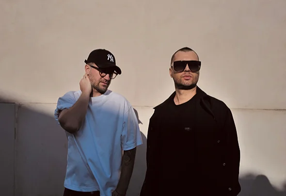
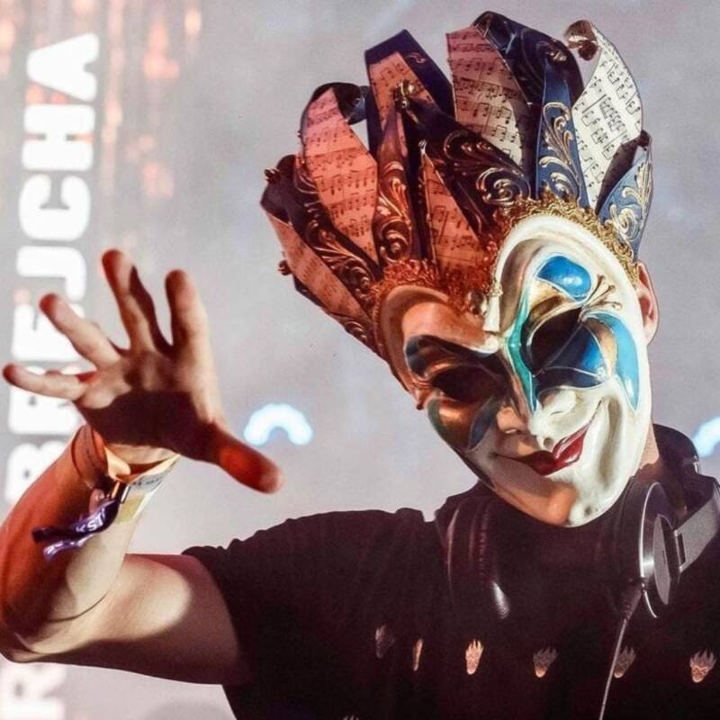
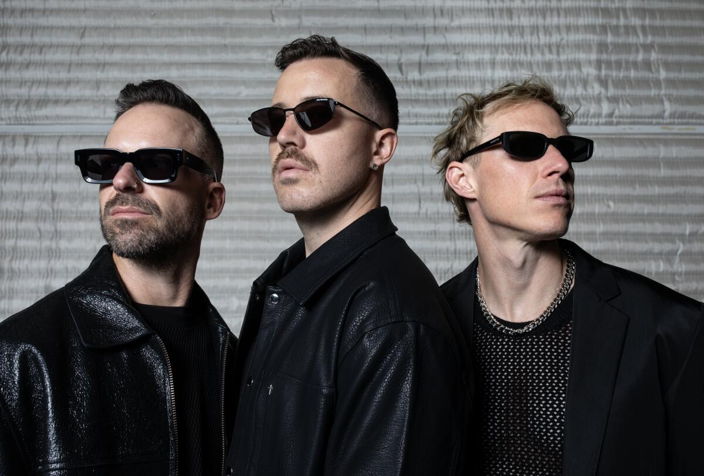
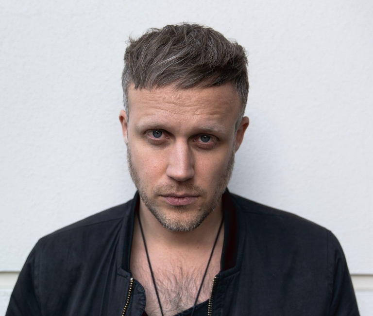

Artbat
Genre: techno/house/electronic-dance

Genre: techno/house/electronic-dance

Genre: minimal techno

Genre: ambient/minimal techno/house

Genre: Indie dance/deep house

Genre: melodic house/deep house
Genre: melodic house/deep house